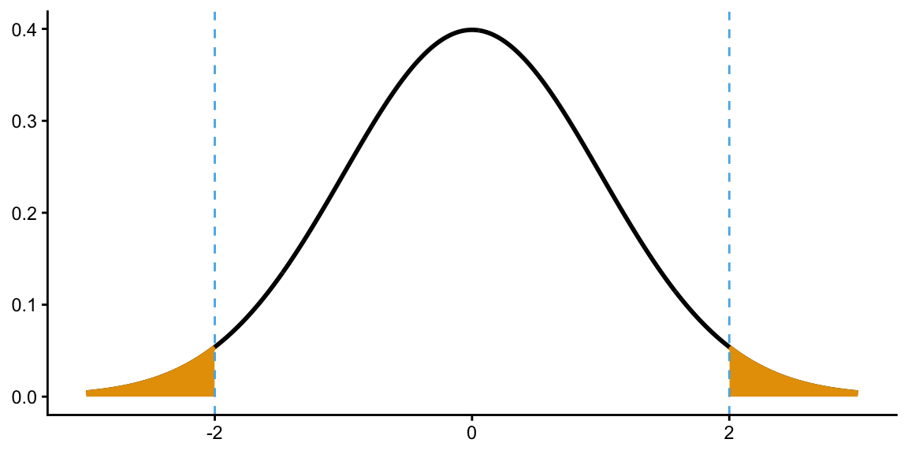
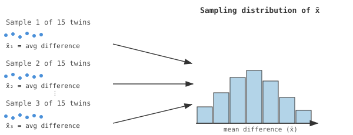
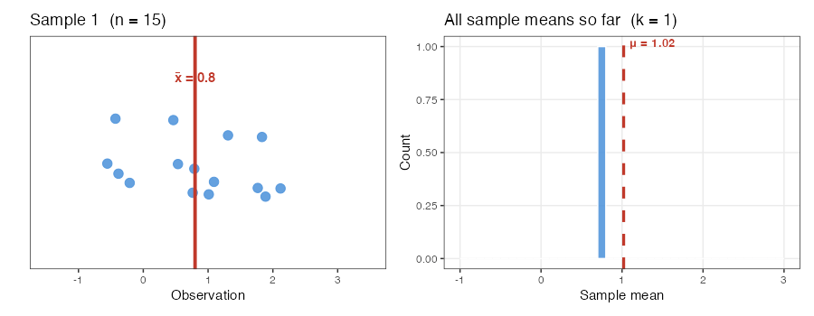
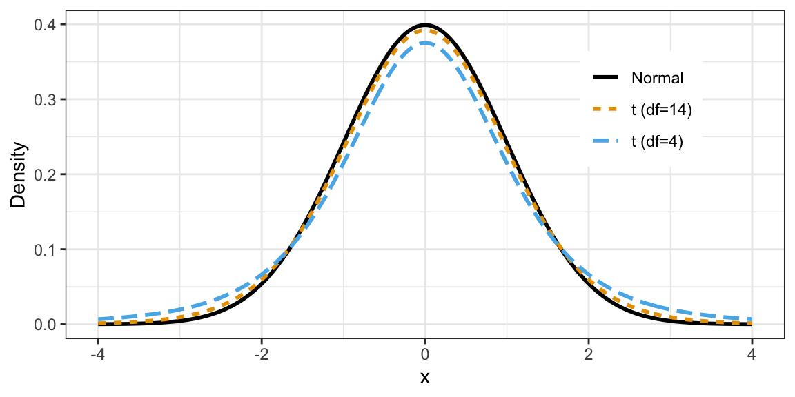
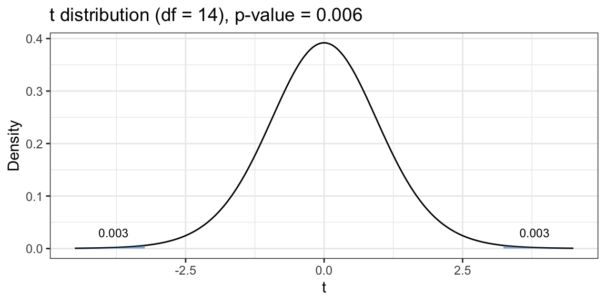
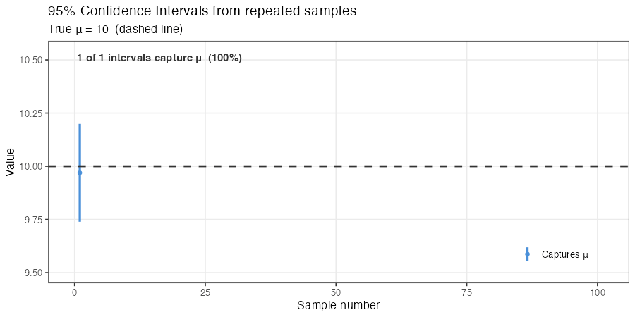
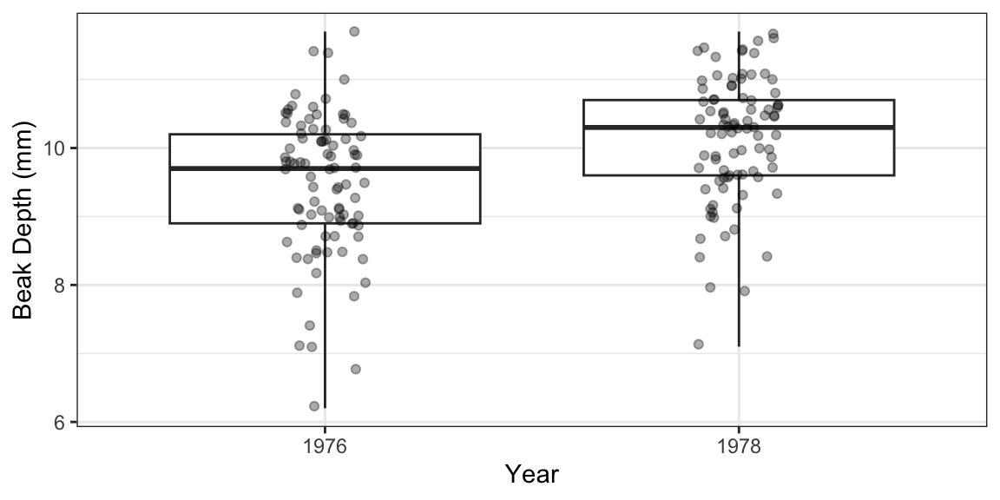
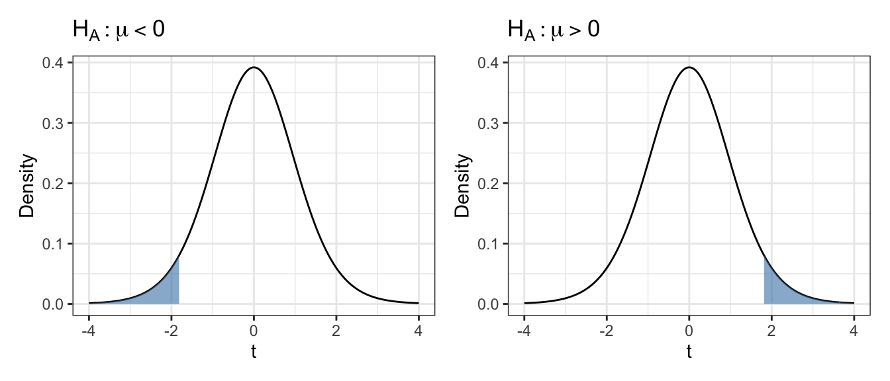

Paired and Two-Sample t-Tests
Learning Objectives
- Describe the sampling distribution and the Central Limit Theorem.
- Carry out paired and two-sample \(t\)-tests in R.
- Construct and interpret confidence intervals for a mean difference.
- Know when to use one-sided tests and non-zero nulls.
Paired \(t\)-Test (§2.2)
- Case Study 2.2: Hippocampus volumes measured on 15 twins where one twin had schizophrenia and the other did not.
- Mean difference = 0.199; is this difference real or random?
- We can frame this as a one-sample problem on the differences.
Sampling Distributions and the CLT
- Sampling distribution: the distribution of a statistic (e.g., \(\bar{X}\)) over many hypothetical random samples from the population.
- Imagine taking many samples of 15 twins and computing the average difference each time.
- In practice we only take one sample — statistical theory tells us about the shape of the sampling distribution without repeating the study.

The animation below shows this process in action. The left panel displays the 15 observations from sample \(k\), with the sample mean \(\bar{X}\) marked in red. The right panel accumulates every sample mean seen so far into a histogram. As more samples pile up, the histogram fills in and its shape converges to the normal distribution predicted by the CLT.

Central Limit Theorem: The sampling distribution of the sample mean is approximately normal for sufficiently large \(n\), regardless of the distribution of individual observations.
Key result: If population mean \(= \mu\) and population SD \(= \sigma\), then \[\bar{X} \;\sim\; N\!\left(\mu,\, \frac{\sigma^2}{n}\right)\] This is useful because it tells us how extreme our observed \(\bar{X}\) is.
- \(\bar{X}\): Sample mean
- \(\mu = E[\bar{X}]\): Population mean
- \(\sigma^2\): Population variance
- \(n\): Sample size
- \(\sigma^2 / n\): Variance of \(\bar{X}\)
General Setup for the One-sample (or Paired) \(t\)-Test
Model: \(E[\bar{X}] = \mu\) (the expected mean difference is \(\mu\)).
Hypotheses: \[H_0: \mu = 0 \quad \text{(no difference)} \qquad H_A: \mu \neq 0 \quad \text{(some difference)}\]
Test statistic: Standardize \(\bar{X}\). If \(\sigma\) were known: \[Z = \frac{\bar{X}}{\sigma/\sqrt{n}} \sim N(0, 1)\]
Compare \(Z\) to a \(N(0, 1)\)
- Shaded region provides evidence against \(H_0\).
- Area of shaded reason is \(p\)-value.
\(t\)-distribution
- Problem: \(\sigma^2\) is unknown.
- Solution: Estimate \(\sigma^2\) with the sample variance \(s^2\).
- Substituting \(s\) for \(\sigma\) introduces extra uncertainty, so we use the \(t\)-distribution instead of \(N(0,1)\): \[T = \frac{\bar{X}}{s/\sqrt{n}} \;\sim\; t_\nu \quad \text{where } \nu = n - 1 \text{ ("degrees of freedom")}\]
- Why use \(t\) instead of \(N(0,1)\)?
- Estimating \(\sigma^2\) adds uncertainty.
- The \(t\)-distribution has heavier tails than \(N(0,1)\).
- Using \(N(0,1)\) would make you over-confident in the weirdness of \(\bar{X}\).

Applying the One-sample (Paired) \(t\)-Test: Twin Study
- \(\bar{X} = 0.199\), \(s/\sqrt{n} = 0.0615\), \(\nu = n - 1 = 14\).
- \(T = 0.199 / 0.0615 = 3.236\). Compare to \(t_{14}\).

2 * pt(-3.236, df = 14)[1] 0.005976868- p-value \(= 0.006\): very strong evidence that \(H_0\) is false.
library(tidyverse)
library(broom)
twins <- read_csv("https://dcgerard.github.io/stat_302/data/case0202.csv")
twins |>
mutate(diff = Unaffected - Affected) ->
twins
t.test(diff ~ 1, data = twins) |>
tidy() |>
select(estimate, statistic, p.value, conf.low, conf.high)# A tibble: 1 × 5
estimate statistic p.value conf.low conf.high
<dbl> <dbl> <dbl> <dbl> <dbl>
1 0.199 3.23 0.00606 0.0667 0.331Confidence Interval for the Mean Effect
Question: What are plausible values for \(\mu\)?
Use the general result: \(\dfrac{\bar{X} - \mu}{s/\sqrt{n}} \sim t_{n-1}\).
In 95% of samples, the following holds: \[t_{n-1}(0.025) \;\leq\; \frac{\bar{X} - \mu}{s/\sqrt{n}} \;\leq\; t_{n-1}(0.975)\]
Solving for \(\mu\) (and using \(-t_{n-1}(0.025) = t_{n-1}(0.975)\)): \[\bar{X} - t_{n-1}(0.975)\,\frac{s}{\sqrt{n}} \;\leq\; \mu \;\leq\; \bar{X} + t_{n-1}(0.975)\,\frac{s}{\sqrt{n}}\]
95% Confidence Interval: \[\bar{X} \;\pm\; t_{n-1}(0.975)\,\frac{s}{\sqrt{n}}\]
Interpreting “95% Confidence”
Let \(l\) and \(u\) be the lower and upper bounds of a 95% CI. Which of the following are correct?
- The probability that \(\mu\) is between \(l\) and \(u\) is 95%. — Incorrect. After observing the interval, \(\mu\) is either inside it or not; no randomness remains.
- Prior to sampling, the probability that our CI captures \(\mu\) is 95%. — Correct.
- 95% of the population’s values lie between \(l\) and \(u\). — Incorrect. CIs are statements about the parameter, not about individual observations.
- A new \(\bar{X}\) from a repeat sample would fall in \((l, u)\) with 95% probability. — Incorrect.
- 95% of new \(\bar{X}\)’s would lie between \(l\) and \(u\). — Incorrect.
- We used a procedure that captures \(\mu\) in 95% of repeated samples. — Correct.
The animation below makes interpretation 6 concrete. Each vertical segment is a 95% CI from one hypothetical repeat of the study. Blue intervals capture the true \(\mu\); red ones miss it. In the long run, about 95% are blue.

Two-Sample \(t\)-Test (§2.1)
- Case Study 2.1.1: Beak depths measured on Daphne Major finches in 1976 (before a drought) and in 1978 (after a drought).
- Goal: still to explore differences in population means, but now we have two independent samples.
finch <- read_csv("https://dcgerard.github.io/stat_302/data/case0201.csv")
finch |>
mutate(Year = factor(Year)) ->
finch
ggplot(finch, aes(x = Year, y = Depth)) +
geom_boxplot(coef = Inf) +
geom_jitter(width = 0.1, alpha = 1/3) +
xlab("Year") +
ylab("Beak Depth (mm)")
General Setup for the Two-Sample \(t\)-Test
Model:
- Let \(X_1, \ldots, X_{n_1}\) = beak depths in 1976.
- Let \(Y_1, \ldots, Y_{n_2}\) = beak depths in 1978. \[X_i = \mu_1 + \varepsilon_i \qquad \varepsilon_i \sim (0, \sigma_1^2)\] \[Y_j = \mu_2 + \delta_j \qquad \delta_j \sim (0, \sigma_2^2)\]
Hypotheses: \[H_0: \mu_1 = \mu_2 \quad \text{(same mean beak depth)} \qquad H_A: \mu_1 \neq \mu_2\]
Test statistic: \(\bar{X} - \bar{Y}\).
- Values further from 0 support a bigger difference.
Null distribution: Under \(H_0\), \[\bar{X} - \bar{Y} \;\sim\; N\!\left(0,\; \frac{\sigma_1^2}{n_1} + \frac{\sigma_2^2}{n_2}\right) \quad\Rightarrow\quad \frac{\bar{X} - \bar{Y}}{\sqrt{\sigma_1^2/n_1 + \sigma_2^2/n_2}} \;\sim\; N(0,1)\]
Problem: \(\sigma_1^2\) and \(\sigma_2^2\) are unknown.
Solution: Replace with \(s_1^2\) and \(s_2^2\): \[T = \frac{\bar{X} - \bar{Y}}{\sqrt{s_1^2/n_1 + s_2^2/n_2}} \;\sim\; t_\nu\] where \(\nu\) is given by the Satterthwaite approximation (computed automatically by R).
p-value: \[p\text{-value} = \Pr(|T| \geq |t^*|) \quad \text{where } T \sim t_\nu\] Small p-values provide evidence against \(H_0\).
95% Confidence Interval for \(\mu_1 - \mu_2\): \[(\bar{X} - \bar{Y}) \;\pm\; t_\nu(0.975)\sqrt{\frac{s_1^2}{n_1} + \frac{s_2^2}{n_2}}\]
tout <- t.test(Depth ~ Year, data = finch)
tidy(tout) |>
select(estimate, statistic, p.value, conf.low, conf.high)# A tibble: 1 × 5
estimate statistic p.value conf.low conf.high
<dbl> <dbl> <dbl> <dbl> <dbl>
1 -0.669 -4.58 0.00000874 -0.956 -0.381Some Things to Think About
1. One-Sided Tests
Sometimes the alternative is directional:
Left-sided Right-sided \(H_0\) \(\mu = 0\) \(\mu = 0\) \(H_A\) \(\mu < 0\) \(\mu > 0\)

- Always report whether a p-value is one-sided or two-sided.
2. Non-Zero Nulls
Test \(H_0: \mu = a\) vs \(H_A: \mu \neq a\) using: \[t^* = \frac{\bar{X} - a}{s/\sqrt{n}} \;\sim\; t_{n-1}\]
In R:
t.test(x, mu = a).
3. “Significance”
A p-value \(\leq 0.05\) is not magical. Arbitrary cutoffs should not drive scientific conclusions.
XKCD (only half-joking):

4. Reporting
- When reporting p-values, always also report either the sample size, the confidence interval, or both.